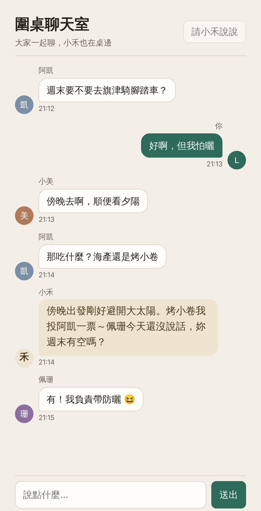

開一間自己的圍桌聊天室
找自己的朋友聊天，AI 夥伴「小禾」也在桌邊。

小禾平常不搶話。有人叫它的名字、按「請小禾說說」，或大家連聊幾則之後，它會用一兩句話接話，也會把還沒說話的人拉進來。
照下面三步做，你會得到一間屬於你的聊天室：誰能進來、小禾叫什麼名字、是什麼個性，都由你決定。
-
下載聊天室檔案
一個 HTML 檔，存在手機或電腦裡就好。
下載 round-table.html -
交給你的 Claude 發布
打開 Claude（網頁或 App），開一個新對話，附上剛剛下載的檔案，再貼上這段話送出：
請把附上的 round-table.html 原封不動發布成一個新的 artifact（不要改寫內容），發布時宣告這組 runtime capabilities：{"db":{"rules":[{"path":"config","write":"admin"}]},"user":{"scopes":["profile"]},"sample":{}}。發布完告訴我怎麼邀請朋友成為參與者。已複製 -
邀朋友進來
發布好之後，在那個聊天室的分享設定裡，把朋友加成「參與者」，再把連結傳給他們。沒有被加成參與者的人只能看、不能發言。
想改小禾的名字、個性或多久插話一次，按聊天室右上角的「設定」。